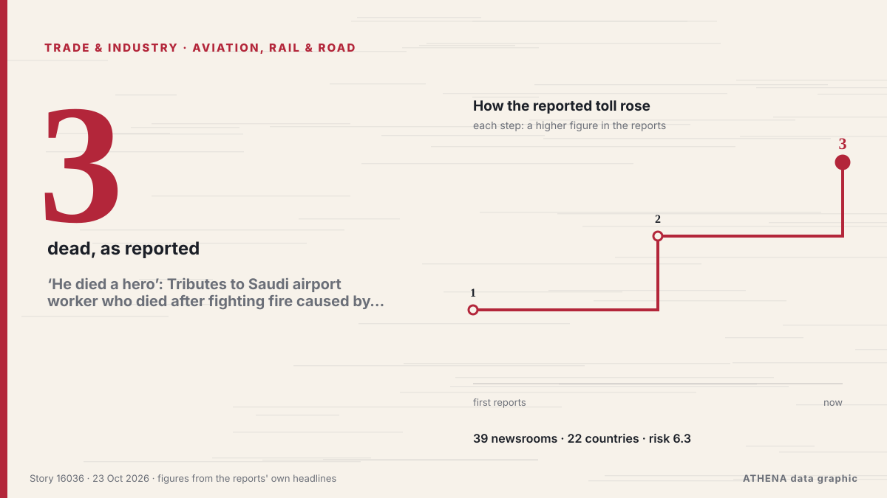

‘He died a hero’: Tributes to Saudi airport worker who died after fighting fire caused by Houthi attack

There were only a few flights by Saudi carriers from the Saudi capital's airport on Wednesday, even as Saudi authorities declared it's open for business. من The Independent
نشرته بشكل مستقل 39 مصدرًا في 22 دولة منذ 21 أكتوبر، وأول من نشره The Independent؛ والتغطية هدأت. يقدّر ATHENA الخطر بأنه مرتفع (6.3/10)، ويعود ذلك أساسًا إلى خطورة الضرر الموصوف ونطاقه الجغرافي والقطاعي. الثقة 87٪ (مرتفعة)، وعدد المصادر المستقلة المؤكِّدة: 39، بمتوسط موثوقية للمصادر يبلغ 75٪.
لماذا يهم: ينتقل الاضطراب في التجارة أو الصناعة أو البنية التحتية عبر سلاسل الإمداد فيغيّر التكاليف ومواعيد التسليم في أماكن بعيدة.
ما الذي تغيّر: 9 تقارير جديدة من 8 غرف أخبار خلال 24 ساعة حتى 23 أكتوبر.
تُعرض العناوين بالإنجليزية كما نُشرت.
نظرة سريعة
اختير وقُيِّم وكُتب وفق منهجية ATHENA المنشورة. لا يتدخل أي محرر في الأحداث بعينها. كيف يُنتَج ›
| 21 Oct 12:22 UTC | 1 |
|---|---|
| 21 Oct 14:22 UTC | 0 |
| 21 Oct 16:22 UTC | 0 |
| 21 Oct 18:22 UTC | 0 |
| 21 Oct 20:22 UTC | 0 |
| 21 Oct 22:22 UTC | 4 |
| 22 Oct 00:22 UTC | 3 |
| 22 Oct 02:22 UTC | 5 |
| 22 Oct 04:22 UTC | 2 |
| 22 Oct 06:22 UTC | 14 |
| 22 Oct 08:22 UTC | 8 |
| 22 Oct 10:22 UTC | 6 |
| 22 Oct 12:22 UTC | 0 |
| 22 Oct 14:22 UTC | 0 |
| 22 Oct 16:22 UTC | 0 |
| 22 Oct 18:22 UTC | 2 |
| 22 Oct 20:22 UTC | 2 |
| 22 Oct 22:22 UTC | 0 |
| 23 Oct 00:22 UTC | 1 |
| 23 Oct 02:22 UTC | 0 |
| 23 Oct 04:22 UTC | 0 |
| 23 Oct 06:22 UTC | 1 |
| 23 Oct 08:22 UTC | 0 |
| 23 Oct 10:22 UTC | 0 |
| 23 Oct 12:22 UTC | 1 |
| 23 Oct 14:22 UTC | 2 |
| 22 Oct 07:04 UTC | 5.6 |
|---|---|
| 22 Oct 07:19 UTC | 6.7 |
| 22 Oct 19:57 UTC | 6.6 |
| 23 Oct 15:15 UTC | 6.9 |
| 26 Oct 12:06 UTC | 6.3 |
| 26 Oct 12:06 UTC | 6.3 |
لماذا هذه الأرقام
الأهمية
الخطر
الثقة
التغطية — من نشر الخبر ومتى
العنوان كما نُشر · يفتح الأصل- The Independent · المملكة المتحدة · United KingdomSaudi capital's airport opens to limited traffic, and other Mideast news
- Middle East Eye · INTOne killed, eight injured in Saudi Arabia’s King Fahd airport attack
- Anadolu Agency (English) · تركيا · TurkeyAttack on Saudi Arabia’s Dammam airport kills 1, injures 8: Aviation authority
- RTÉ News · أيرلندا · IrelandTwo dead, eight injured in Saudi airport attack
- The Hill · الولايات المتحدة · United States1 killed, 8 wounded in Saudi Arabia airport attack
- Al Jazeera English · قطر · QatarOne killed, eight injured in attack on Saudi Arabia’s King Fahd airport
- Express Tribune · باكستان · PakistanSaudi-led coalition intercepts, destroys drone in Riyadh region
- Oman Observer · عُمان · OmanThree killed in Saudi Arabia as Ansar Allah target oil field, airport
- Saudi Gazette · المملكة العربية السعودية · Saudi ArabiaOne killed, eight injured in attack on Dammam airport
- Asharq Al-Awsat (English) · المملكة العربية السعودية · Saudi Arabia2 Killed, 8 Injured in Dammam Airport Attack
- The National · الإمارات العربية المتحدة · United Arab EmiratesUS pulls diplomats from Saudi Arabia but denies wider Gulf withdrawal
- Arab Times · الكويت · KuwaitDammam Airport Attack Leaves One Dead, Eight Injured in Saudi Arabia
- The National · الإمارات العربية المتحدة · United Arab EmiratesMiddle East latest: UAE condemns Houthi attack on Saudi Arabia’s Dammam airport
- Khaama Press · أفغانستان · AfghanistanOne Killed, Eight Injured in Attack on Saudi Arabia’s King Fahd Airport
- Kurdistan24 (English) · العراق · IraqSaudi Aviation Body Reports Two Killed in Dammam Airport Attack
- Oman Observer · عُمان · OmanTwo dead in eastern Saudi airport attack: aviation authority
- The Korea Times · كوريا الجنوبية · South Korea1 person killed in attack on eastern Saudi airport, authorities say
- Türkiye Today · تركيا · TurkeyHouthi strike kills 1, injures 8 at Saudi King Fahd International Airport
- The Daily Star — page reader · بنغلاديش · BangladeshOne killed, 8 injured in Dammam airport attack: Saudi aviation authority
- The Straits Times · سنغافورة · Singapore3 killed, 8 injured in attacks on Aramco oil field, Saudi airport
- Gulf News · الإمارات العربية المتحدة · United Arab EmiratesSaudi Arabia's Dammam airport resumes operations after attack kills two, injures eight
- Arab News · المملكة العربية السعودية · Saudi ArabiaDammam’s King Fahd airport resumes normal operations
- Business Recorder · باكستان · PakistanTwo killed, 8 injured in attack on airport in Saudi oil city Dammam
- Indian Express · الهند · IndiaIndian killed, three others injured in Houthi attacks on Saudi Arabia
- Arab Times · الكويت · KuwaitIndian Expat, Saudi National Among Two Killed in Iran-Backed Houthi Attack on Dammam Airport; Eight Injured
- NDTV · الهند · IndiaIndian Among 2 Killed In Attack On Saudi Airport, 2 Others Injured
- Times of India · الهند · IndiaIndian national among 2 killed in attack on Saudi Arabia's Dammam airport
- The New Arab · INTTwo dead in eastern Saudi airport attack: aviation authority
- Shafaq News (English) · العراق · IraqDammam airport attack death toll rises to two
- The Kathmandu Post · نيبال · NepalA Nepali among eight injured in Dammam airport attack
- Daily Maverick · جنوب أفريقيا · South AfricaTwo killed, 8 injured in attack on airport in Saudi oil city Dammam
- Xinhua (English) — page reader · الصين · ChinaDeaths from attack on Saudi airport rise to 2
- BBC News · المملكة المتحدة · United KingdomTwo killed in Houthi attack on airport in eastern Saudi Arabia, authorities say
- Scroll.in · الهند · IndiaSaudi Arabia: Indian killed in Dammam airport attack
- The Hindu · الهند · IndiaIndian killed as Houthis attack Saudi Arabia’s Dammam airport
- Gulf News · الإمارات العربية المتحدة · United Arab EmiratesKing Fahd airport attack: Indian national among two killed, embassy confirms
- Egypt Independent · مصر · EgyptTwo killed and eight injured in attack targeting King Fahd Airport in Saudi Arabia
- Egypt Independent · مصر · EgyptEgypt condemns attack on King Fahd Airport in Saudi Arabia
- Asharq Al-Awsat (English) · المملكة العربية السعودية · Saudi ArabiaJordan, Egypt Condemn Attack on King Fahd International Airport in Saudi Arabia
- Arab News · المملكة العربية السعودية · Saudi ArabiaIndia condemns deadly attacks on Saudi Arabia’s Eastern Province